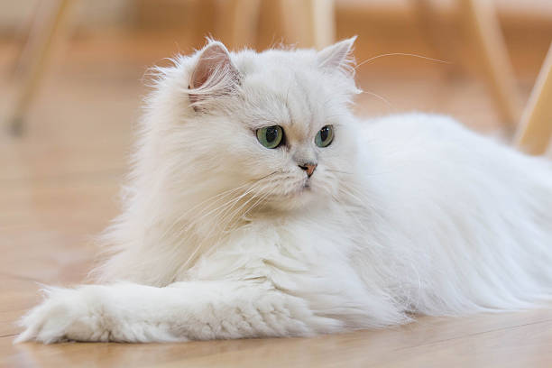
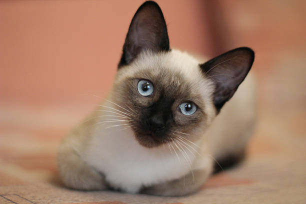

Persian

Persian cats are known for their luxurious, long coats and sweet personalities. They prefer quiet environments and enjoy lounging on soft surfaces. These cats require regular grooming due to their thick fur, and they thrive in a calm household.
Siamese

Siamese cats are vocal, social, and extremely loyal to their owners. They have a sleek, elegant body with striking blue eyes and pointed coloration. These cats are very interactive and enjoy mental stimulation and companionship.
Maine Coon

Maine Coons are one of the largest domesticated cat breeds. They are gentle giants known for their dog-like behavior and intelligence. With their thick, shaggy coats and bushy tails, they adapt well to colder climates. They're also very playful and affectionate.
Sphynx

The Sphynx is a hairless breed with a warm, suede-like skin. They are energetic, curious, and love being the center of attention. Despite their lack of fur, they need regular bathing to remove skin oils. Sphynx cats are ideal for owners looking for an affectionate and quirky companion.
Tabby

Tabby cats are known for their distinct striped, swirled, or spotted coats and their friendly, playful personalities.